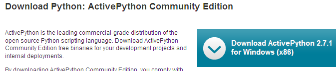
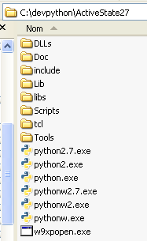
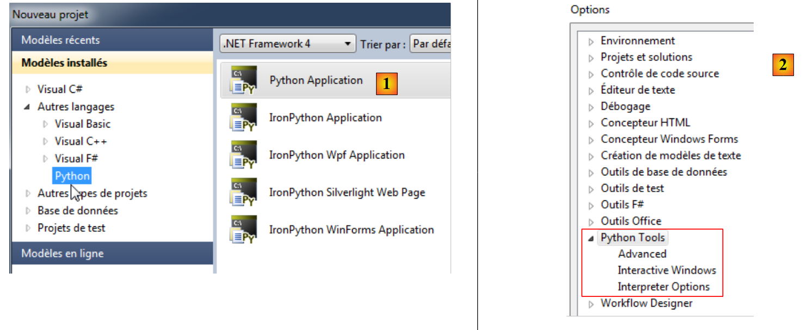
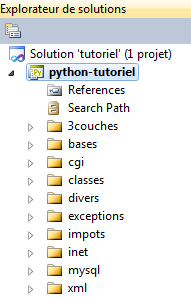

2. Installation d'un interpréteur Python
2.1. ActivePython
Les exemples de ce document ont été testés avec l'interpréteur Python d'ActiveState :
 |
Notes :
- ne pas télécharger la version 64 bits d'Active Python. Elle ne permet pas l'installation du module MySQLdb dont on a besoin dans la suite du document.
L'installation d'ActivePython donne naissance à l'arborescence suivante :
 |
et au menu suivant dans l'arborescence des applications :
 |
- 1 : la documentation d'ActivePython. Celle-ci est très riche et un bon réflexe est de la consulter dès qu'on rencontre un problème ;
- 2 : un interpéteur Python interactif ;
- 3 : le gestionnaire de packages d'Active Python. Nous nous en servirons pour installer le package Python permettant de travailler avec des bases de données MySQL.
Nous n'utiliserons pas l'interpéteur Python interactif. Il faut simplement savoir que les scripts de ce document pourraient être exécutés avec cet interpréteur. Pratique pour tester le fonctionnement d'une fonctionnalité Python, il l'est peu pour des scripts devant être réutilisés. Voici un exemple :
 |
Le prompt >>> permet d'émettre une instruction Python qui est immédiatement exécutée. Le code tapé ci-dessus a la signification suivante :
Lignes :
- 1 : initialisation d'une variable. En Python, on ne déclare pas le type des variables. Celles-ci ont automatiquement le type de la valeur qu'on leur affecte. Ce type peut changer au cours du temps ;
- 2 : affichage du nom. 'nom=%s' est un format d'affichage où %s est un paramètre formel désignant une chaîne de caractères. (nom) est le paramètre effectif qui sera affiché à la place de %s ;
- 3 : le résultat de l'affichage ;
- 4 : l'affichage du type de la variable nom ;
- 5 : la variable nom est de type str (string).
Dans la suite, nous proposons des scripts qui ont été testés de la façon suivante :
- le script peut être écrit avec un éditeur de texte quelconque. Ici nous avons utilisé Notepad++ qui offre une coloration syntaxique des scripts Python ;
- le script est exécuté dans une fenêtre Dos.
 |
- on se placera dans le dossier du script à tester ;
- la variable %python% est une variable système :
- ligne 1 : affichage de la valeur de la variable d'environnement %python% ;
- ligne 2 : sa valeur : <installdir>\python.exe où installdir est le dossier d'installation d'ActivePython.
2.2. Python Tools for Visual Studio
[Python Tools for Visual Studio] est disponible (février 2012) à l'URL suivante : [http://pytools.codeplex.com/]. Son exécution ajoute des fonctionnalités Python à Visual Studio 2010. La version Express de Visual Studio 2010 est gratuite et disponible à l'URL [http://www.microsoft.com/visualstudio/en-us/products/2010-editions/express].
Une fois les extensions [Python Tools for Visual Studio] installées, on peut alors créer des projets Python avec VS 2010 :
 |
- pour tous les exemples de ce document, le choix [1] convient ;
- [2] : le menu (Outils / Options) permet de configurer l'environnement Python.
L'interpréteur d'ActivePython a du être détecté par Visual Studio [3] :
 |
- en [4], on demande à ce que l'exécution du programme se termine par une pause que l'utilisateur interrompt en tapant une touche au clavier.
Créons un projet Python (Fichier / Nouveau / Projet) :
 |
- en [1,2] : choisir un projet Python de type [Python Application] ;
- en [3] : choisir un dossier pour le projet ;
- en [4] : donner un nom au projet ;
- en [5] : le projet généré.
Le fichier [essai_02.py] est un programme Python :
print('Hello World')
On l'exécute par [Ctrl-F5] : le résultat apparaît dans une fenêtre Dos [6]. Tous les codes du document ont été également testés de cette façon. Les exemples sont livrés sous la forme d'une solution VS 2010 :
 |